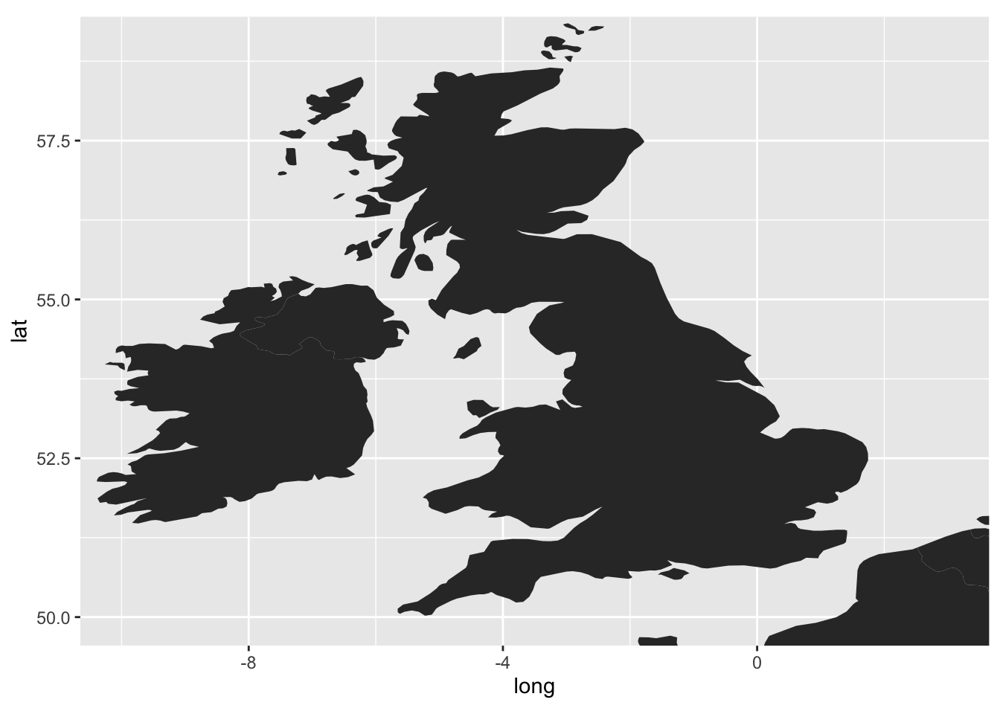
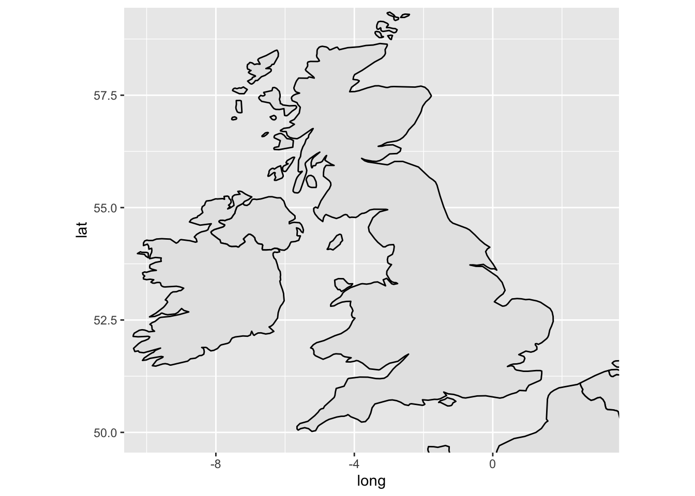
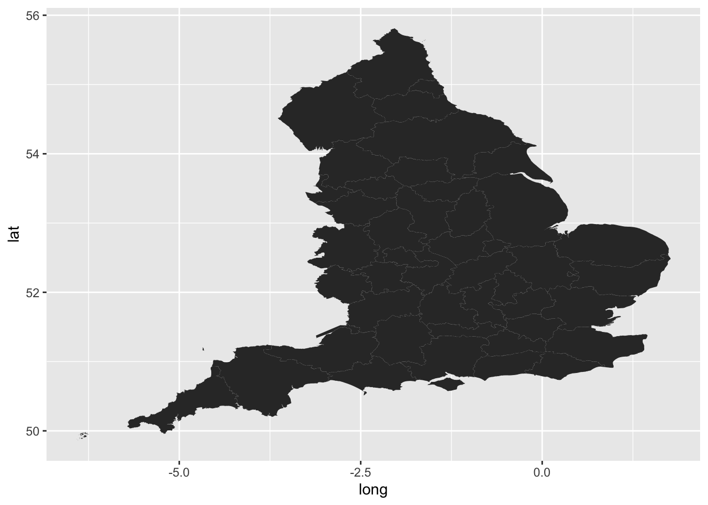
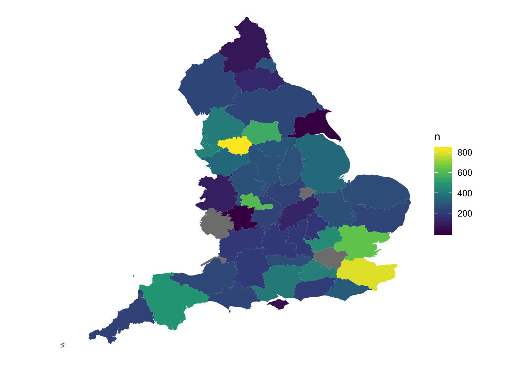

13 Geocode and map newspaper titles
R is also really good for creating maps, both for visualisations and for spatial analysis.
13.1 Points
Another thing we can do is create a map of all the titles. For this we’ll need three things
A background map of the UK and Ireland
A count of the total titles for each city
A list of coordinates for all the cities. This last one is a little trickier than the other two, as I’ll explain. Without some manually editing we might end up with some slightly dodgy results. But let’s just see where we end up.
13.1.1 Drawing a background map. `
Maps is a library for R which, unsurprisingly, contains some map data, including some high resolution maps of the world. To draw the map, first we install the library.
install.packages('maps')
Next we load two libraries to use: maps and ggplot2. We’ll use a function from ggplot2 called map_data to turn some data from the maps package into a dataframe, and then we’ll use some more plotting functions from ggplot2 to draw the map.
First we assign a name to the dataframe we’ll create with map_data
Take a look at the dataframe we’ve created:
## long lat group order region subregion
## 1 -69.89912 12.45200 1 1 Aruba <NA>
## 2 -69.89571 12.42300 1 2 Aruba <NA>
## 3 -69.94219 12.43853 1 3 Aruba <NA>
## 4 -70.00415 12.50049 1 4 Aruba <NA>
## 5 -70.06612 12.54697 1 5 Aruba <NA>
## 6 -70.05088 12.59707 1 6 Aruba <NA>
## 7 -70.03511 12.61411 1 7 Aruba <NA>
## 8 -69.97314 12.56763 1 8 Aruba <NA>
## 9 -69.91181 12.48047 1 9 Aruba <NA>
## 10 -69.89912 12.45200 1 10 Aruba <NA>
## 12 74.89131 37.23164 2 12 Afghanistan <NA>
## 13 74.84023 37.22505 2 13 Afghanistan <NA>
## 14 74.76738 37.24917 2 14 Afghanistan <NA>
## 15 74.73896 37.28564 2 15 Afghanistan <NA>
## 16 74.72666 37.29072 2 16 Afghanistan <NA>
## 17 74.66895 37.26670 2 17 Afghanistan <NA>
## 18 74.55899 37.23662 2 18 Afghanistan <NA>
## 19 74.37217 37.15771 2 19 Afghanistan <NA>
## 20 74.37617 37.13735 2 20 Afghanistan <NA>
## 21 74.49796 37.05722 2 21 Afghanistan <NA>It’s a big table with about 100,000 rows. Each row has a latitude and longitude, and a group. Each region and sub-region in the dataframe has its own group number. We’ll use a function geom_polygon which tells ggplot to draw a polygon (a bunch of connected lines) for each group, and display it.
With the aes(), x tells ggplot2 the longitude of each point, y the latitude, and group makes sure the polygons are grouped together correctly.

Right, it needs a bit of tweaking. First, we only want to plot points in the UK and Ireland. There’s obviously way too much map for this, so the first thing we should do is restrict it to a rectangle which includes those two countries.
We can do that with coord_fixed(). coord_fixed() is used to fix the aspect ratio of a coordinate system, but can be used to specify a bounding box by using two of its arguments: xlim= and ylim=. These each take a vector (a series of numbers) with two numbers. A vector is created using c(). Each number specifies the limits for that axis. So xlim = c(0,10) means restrict the x-axis to 0 and 10. The axes correspond to the lines of longitude (x) and latitude (y). We’ll restrict the x-axis to c(-10, 4) and the y-axis to c(54, 60) which should just about cover the UK and Ireland.
ggplot() + geom_polygon(data = worldmap, aes(x = long, y = lat, group = group)) +
coord_fixed(xlim = c(-10,3), ylim = c(50, 59))
We can also change the ratio of the coordinates using coord_fixed(). The default is 1, but by specifying a different one with the argument ratio =, that can be changed. Using ratio = 1.3 results in a less squashed-looking map.
ggplot() + geom_polygon(data = worldmap, aes(x = long, y = lat, group = group)) +
coord_fixed(ratio = 1.3, xlim = c(-10,3), ylim = c(50, 59))
A couple more things, which I’ll run through quickly.
We can specify fill and line colors usings fill = and color = inside geom_polygon() but outside aes().
ggplot() + geom_polygon(data = worldmap, aes(x = long, y = lat, group = group), fill = 'gray90', color = 'black') +
coord_fixed(ratio = 1.3, xlim = c(-10,3), ylim = c(50, 59))
We probably don’t need the grids or panels in the background. We can get rid of these with + theme_void(), but bear in mind we might need to add some theme elements back, manually.
ggplot() + geom_polygon(data = worldmap, aes(x = long, y = lat, group = group), fill = 'gray90', color = 'black') +
coord_fixed(ratio = 1.3, xlim = c(-10,3), ylim = c(50, 59)) +
theme_void()
13.1.2 Get a count of the total titles for each city
This next bit uses some of the functions demonstrated in the introduction to R and the tidyverse, namely group_by() and tally().
First load the rest of the tidyverse packages.
Next, load the title list, which can be dowloaded here:
We can quite easily make a new data frame, which will just include each location and the total number of instances in the dataset.
location_counts = title_list %>%
group_by(country_of_publication, general_area_of_coverage, coverage_city) %>%
tally()Arranging these in descending order of their count shows how many of each we have:
## # A tibble: 2,189 x 4
## # Groups: country_of_publication, general_area_of_coverage [531]
## country_of_publication general_area_of_coverage coverage_city n
## <chr> <chr> <chr> <int>
## 1 England London London 5781
## 2 Ireland Dublin (Ireland : County) Dublin 415
## 3 Scotland Strathclyde Glasgow 309
## 4 England Greater Manchester Manchester 265
## 5 England West Midlands Birmingham 260
## 6 England Merseyside Liverpool 220
## 7 England Avon Bristol 175
## 8 Scotland Lothian Edinburgh 162
## 9 England South Yorkshire Sheffield 133
## 10 England Nottinghamshire Nottingham 127
## # … with 2,179 more rows13.1.3 Get a list of points.
Well, we’ve cheated and made this one already, with lots of manual work.
We’ll load a dataset containing geocorrected points
This needs a little bit of pre-processing. First use a library called snakecase and a function called to_snakecase() to standardise the column names.
Then make the coordinate columns numeric using mutate()
geocorrected = geocorrected %>%
mutate(wikilat = as.numeric(wikilat)) %>%
mutate(wikilon = as.numeric(wikilon))## Warning: NAs introduced by coercion
## Warning: NAs introduced by coercionLast, change the NA values to the same format as the ones in the title list.
geocorrected = geocorrected %>%
mutate(country_of_publication = replace(country_of_publication, country_of_publication == 'na', NA)) %>% mutate(general_area_of_coverage = replace(general_area_of_coverage, general_area_of_coverage == 'na', NA)) %>%
mutate(coverage_city = replace(coverage_city, coverage_city == 'na', NA))Using left_join() we will merge these dataframes, joining up each set of location information to its coordinates and standardised name.
Right, now we’re going to use group_by() and tally() again, this time on the the wikititle, wikilat and wikilon columns. This is because the wikititle is a standardised title, which means it will group together cities properly, rather than giving a different row for slightly different combinations of the three geographic information columns.
OK, lc_with_geo_counts is what we want to plot. This contains the city title, coordinates and counts for all the relevant places in our dataset. But first we again need the map we created earlier.
ggplot() + geom_polygon(data = worldmap, aes(x = long, y = lat, group = group), fill = 'gray90', color = 'black') +
coord_fixed(ratio = 1.3, xlim = c(-10,3), ylim = c(50, 59)) +
theme_void()
Now we will plot the cities using geom_point() We’ll specify the lc_with_geo_counts as the argument to data = within geom_point(). The x axis position of each point is the longitude, and the y axis the latitude. We’ll also use the argument size = n within the aes(), to tell ggplot2 to size the points by the column n, which contains the counts for each of our locations, and the argument alpha = .7 outside the aes(), to make the points more transparent and slightly easier to read overlapping ones.
One last thing we’ll add is +scale_size_area(). This sizes the points using their radius rather than diameter, which is a more correct way of representing numbers using circles!
ggplot() + geom_polygon(data = worldmap, aes(x = long, y = lat, group = group), fill = 'gray90', color = 'black') +
coord_fixed(ratio = 1.3, xlim = c(-10,3), ylim = c(50, 59)) +
theme_void() + geom_point(data = lc_with_geo_counts, aes(x = as.numeric(wikilon), y = as.numeric(wikilat), size = n), alpha = .7) +
scale_size_area()
13.2 Choropleth map
13.2.1 Which libraries are needed
13.2.2 Download a shapefile
13.2.3 Have a look at the shapefile
## OGR data source with driver: ESRI Shapefile
## Source: "/Users/yannryan/Desktop/r-projects/r-for-news-data/data/english_ceremonial_counties", layer: "English Ceremonial Counties"
## with 47 features
## It has 2 fieldsThe next thing to do is use a library called broom and a function called tidy(). This turns the shapefile into a dataframe which can be read and plotted by ggplot2.
First change the projection:
Then use gSimplify() to simplify it very slightly:
Add back in the data, which gSimplify doesn’t keep:
Finally, do the tidy again. It should work this time.
https://gis.stackexchange.com/questions/243569/simplify-polygons-of-sf-object
Draw the map:

Add in the counts using left_join()
ggplot() +
geom_polygon(data = pc_tidy %>%
left_join(county_totals,
by = c('id' = 'general_area_of_coverage')),
aes(x = long, y = lat,
fill = n, group = group)) +
theme_void() +
coord_fixed(1.3) + scale_fill_viridis_c()
anti_join(title_list %>%
filter(country_of_publication == 'England') %>%
group_by(general_area_of_coverage) %>%
tally(),pc_tidy %>%
group_by(id) %>%
tally() %>%
select(id), by = c('general_area_of_coverage' = 'id')) %>%
arrange(desc(n))## # A tibble: 274 x 2
## general_area_of_coverage n
## <chr> <int>
## 1 London 5866
## 2 <NA> 379
## 3 Humberside 322
## 4 Avon 321
## 5 Hereford & Worcester 225
## 6 Cleveland 122
## 7 Jersey 33
## 8 Isle of Man 31
## 9 Guernsey 29
## 10 Great Britain 7
## # … with 264 more rows## # A tibble: 4 x 1
## id
## <chr>
## 1 County of Bristol
## 2 Greater London
## 3 Herefordshire
## 4 Rutlandknitr::kable(
head(mtcars[, 1:8], 10), booktabs = TRUE,
caption = 'A table of the first 10 rows of the mtcars data.'
)| mpg | cyl | disp | hp | drat | wt | qsec | vs | |
|---|---|---|---|---|---|---|---|---|
| Mazda RX4 | 21.0 | 6 | 160.0 | 110 | 3.90 | 2.620 | 16.46 | 0 |
| Mazda RX4 Wag | 21.0 | 6 | 160.0 | 110 | 3.90 | 2.875 | 17.02 | 0 |
| Datsun 710 | 22.8 | 4 | 108.0 | 93 | 3.85 | 2.320 | 18.61 | 1 |
| Hornet 4 Drive | 21.4 | 6 | 258.0 | 110 | 3.08 | 3.215 | 19.44 | 1 |
| Hornet Sportabout | 18.7 | 8 | 360.0 | 175 | 3.15 | 3.440 | 17.02 | 0 |
| Valiant | 18.1 | 6 | 225.0 | 105 | 2.76 | 3.460 | 20.22 | 1 |
| Duster 360 | 14.3 | 8 | 360.0 | 245 | 3.21 | 3.570 | 15.84 | 0 |
| Merc 240D | 24.4 | 4 | 146.7 | 62 | 3.69 | 3.190 | 20.00 | 1 |
| Merc 230 | 22.8 | 4 | 140.8 | 95 | 3.92 | 3.150 | 22.90 | 1 |
| Merc 280 | 19.2 | 6 | 167.6 | 123 | 3.92 | 3.440 | 18.30 | 1 |